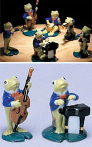
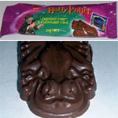
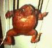
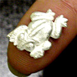

ぴのこ事務局長カエルにゴールイン！【福岡発げこげこ大王直筆】『福岡かえる展』事務局長ぴのこ同志の結婚式が、このほど盛大に行われたぞおおおおおおっ！午前中、池の中の宮殿で華やかに挙式したあと、夜の部は、カエル度爆発で、祝福しましたあああああああああああああああ。カエルな嫁をゲットした新郎『カエル王子』の幸福は約束されているようなものなので、シアワセモノなのであるうううう。ということで、新郎にもカエル帽子をかぶせて、周囲をカエラーで包囲して記念写真を撮影しましたあ。おめでとう！ 鳥獣戯画カエルコートがデビュー！ 【全国かえる奉賛会】そうして、このめでたき日に、大王が福井県在住のデザイナーに特注していた『鳥獣戯画柄のカエルコート』が、披露されました。
【全国かえる奉賛会】そうして、このめでたき日に、大王が福井県在住のデザイナーに特注していた『鳥獣戯画柄のカエルコート』が、披露されました。せっかくの披露なので、特別ページを作って常設展示しようと思いました！もー、昨日の夜から寝ないで作りましたああああ。仕事中ばりねむいぞ。 鳥獣戯画カエルコートを大公開カエルオーケストラのコンサートに行こう！！ 【東京発日本フィルハーモニー交響楽団はっしー同志記者】私共は、オーケストラとして、クラシックの演奏活動を日々行っております。しかし、音はその一時のものであり、たとえCDでも会場の「生」の感動まで再現するものではありません。しかし、CDやその他オリジナルのグッズという、形あるものを、できるだけ多くの皆さんの手元に置いていただき、日本フィルを身近なものとしてほしいという願いと、スポンサーを持たない自主運営オーケストラの財政基盤強化の一助とするため、グッズの販売を行っております。 この度、カエル関連のグッズの取扱をはじめました。●「かえるステッカー」3枚組900円●「かえるフィルハーモニー（フィギュア）」6体セット5000円●「かえるスタンド（CD・MDラック）」400円 別件ですが、日本フィルはご存知のとおり、毎年２月に九州ツアーを行っています。今回は、2003年2月13日〜26日まで、12公演を行います。 福岡公演は、２００３年２月14日 アクロス福岡。指揮は、日本フィル指揮者の藤岡幸夫 。ソリストはギターの大萩康司。プログラムはベートーヴェン：交響曲第６番「田園」。ロドリーゴ：アランフェス協奏曲。ストラヴィンスキー：バレエ組曲「火の鳥」です。 演奏会当日の会場ロビーでも、カエルグッズの販売を行う予定です。
全国かえる奉賛会公認オーケストラに選定！【全国かえる奉賛会】うわああああああ。日フィルのグッズがカエルだなんて、みんな知ってたかああああああああ。今年の第九は、日フィルだぜぜえ。全国のカエラー諸君。きょうから、クラシックファンになって、カエルグッズを集めようではないかあああ。しかも、かえるフィルは、可愛い！！みんなどんどん注文してくれええええ。
大王は２月公演に行くなり！会場で会おうぜ。アンコール曲は、カエルの歌エンドレス会場輪唱付きにしてほしいぞおおおお。歌いまくるぞおお！
ハリーポッターかえるチョコ黒色をゲット！ 【千葉発くぼ同志記者】ハリーポッターのカエルチョコを明治屋で見つけました。包み紙のようなカエルを期待して買ったのですが、意外と平べったかったです。カエルの全長は６センチくらいです。中には、トランプくらいの大きさのコレクションカードが入っていて、傾き方を変えると図柄が変わって見えるカードでした。裏にはカエルの絵がついていました。 カエルはミルクチョコのいいにおいがして、我慢できずに食べてしまいそうです・・・
【全国かえる奉賛会】えーっ。先週号でスミ同志記者がゲットしてきたチョコは、ホワイトチョコだったけど、これは茶色だあああ。２種類でていたのかああああ。
NTT東日本のフェアでカエルがイメージキャラクター！【なごや発のせ同志記者】NTT東日本のフェアでカエルがイメージキャラクターとして使われているのを発見しました！プレゼントは色々購入やら条件があるのですが、ゲームをすると壁紙がゲットできたりと、カエルアニメーション満載のHPです。凄く可愛かったのでもし良かったらいってみて下さい。
血まみれカエルポシェットを救出！ 【日本発にゃ -同志記者】蛙の剥製ポシェットは、珍しく手足もついているんです。珍しく、恨んだ目はしてません。お腹側の手から手の間にファスナーがついてます。背中のいぼいぼもらぶりーです。海外土産で「気持ち悪い」と嫌がられたからと、常連さんが喫茶店に放置していって、しぶしぶ吊されて埃をかぶっていたのを、お引き取りして、蛙部屋（ピアノ室）にいます。 海外のお土産として『うけ狙い』に買ったところ、誰からも拒絶されて、喫茶店のママさんに押しつけて、数年間、埃ざらしになってたそうです。無事、救出（むしろ喜んで）して、ありがたがられました。貰い受けて、大切に大切に供養させて頂いてます。 飲食店の煙草と食べ物の匂いと、埃にまみれてたなんて、可哀想すぎます。こんなに可愛いのに。北京ダック色デス。背中は、ぶつぶつ。 にゃー
アメリカかえるカーミットが殿堂入り！【日本発kero同志記者】keroと申します。こんばんは。なんと、マペットで活躍されているKermit the Frogが、ハリウッドに殿堂いりされたそうです。今朝、おかーたまがスーパーモーニングを見ていたとき、このニュースを知りました。さきほど、keroはyahooのアメリカのサイトでそのニュースをさがしました。かえる新聞の愛読者たち、カエラーたち、世界中のカエラーたちはこの出来事を祝福しましょう。
日本ではカーミットが発売中止に！【日本発kero同志記者】Kermit the frogのグッズが、ソニークリエイティブプロダクツとJim Henson's companyとの契約が切れたから、日本での販売が中止になったそうです。衛星放送WOWOWで、来月24日午後3時45分から、午後5時20分まで、「マペットのクリスマスキャロル」が吹き替え版で放映されるそうです。 Kermitファンのカエラーさんたちには、悲しいニュースの後に嬉しいニュースがあることでしょう。
【全国かえる奉賛会】えええええ。そうなのおお。大王の机の上にも、陽気なカーミットが魚たちの前で歌っている盆栽みたいなのがあるんだけど。これからは海外で購入しないといけないのかああ。
 純銀カエルでお金もカエル！【長崎発大浦お慶同志記者】こんにちわ。お初です。かえるのシルバーアクセサリーを作ってます。純銀で作ったので、金にかえって戻ってくる！お財布サイズです カエル好きの人のための、お守りとして作ったのですが、私自身が、かえるが守護神と、にいわれた事があって、要するに好きなのですが、人間臭すぎといわれてます。
可愛いカエルが、作りたい、できるだけたくさんの人の御意見を伺いたいのです。よろしく！
カエルポスター応募ありがとおおおお！【福岡発げこげこ大王七世直筆】前号で感電防止かえるポスターを欲しい人募集したところ、たくさんのカエラーの応募ありがとうございました。残念ながら全員には行きわたらないけど、もらった人はラッキーということで！発送をもって当選発表にかえさせてもらいます。
職場にはったひとは、職場の人たちの笑顔とともに、投稿してくれたら紹介するぞおおおお。
投稿採用者に武功カエル徽章を授与！ |

かえる古新聞過去に取り上げた記事を見出し付きで一覧したい人は、ここをクリック◆創刊号を見る◆先週号を見る◆話題の号を見る◆かえる新聞の昔を読む
|
私も入っています。。全国かえる奉賛会
大王様に会うには、このバナーをクリック。ずっと奥に写真館があるぞ。全国かえる奉賛会に入会するには、自分のホームページのどこかに、下の部分を追加するとバナーがリンク付きで表示されるぞ。どんどん入会しましょー |


|